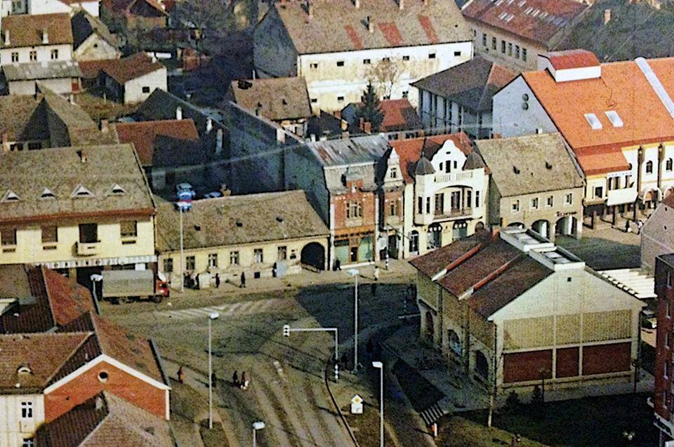
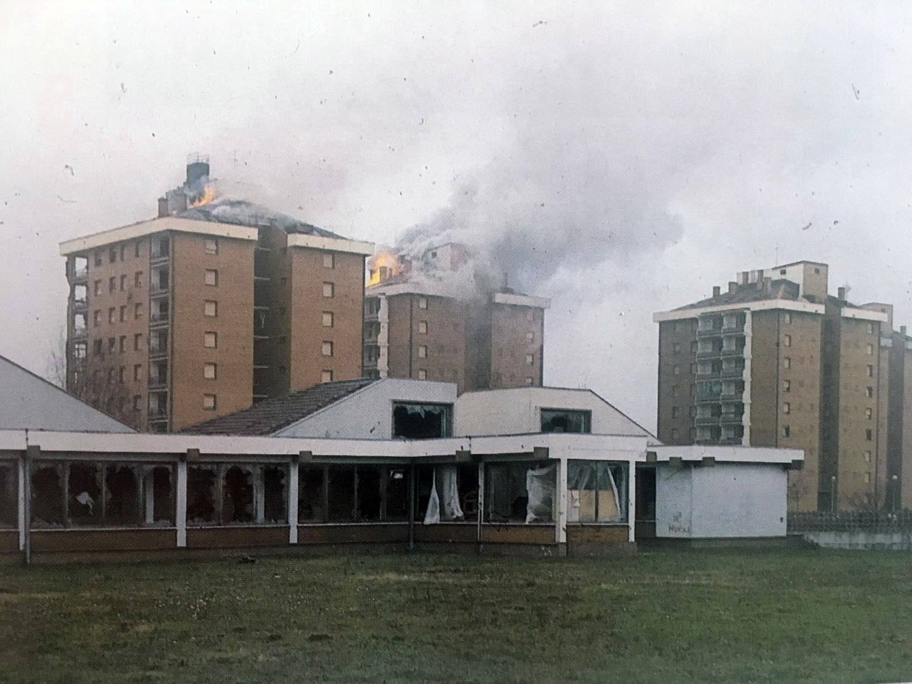

Arheološka istraživanja na području Vinkovaca pokazala su postojanje starije faze starčevačke kulture neolitika, prije 7000 godina. Dvije autohtone kulture, sopotska i vinkovačka nastanjivale su širje područje grada od 4000-1800 g. pne. U starijem željeznom dobu područje grada naselili su Iliri, a u mlađem Kelti koji su se ubrzo stopili s Ilirima.
Antika
U rimsko doba današnji Vinkovci su se nazivali Aurelia Colonia Cibalae (riječ "cibalae" je na ilirskom značila "brežuljak"). Bio je to jedan od većih antičkih gradova, koji se protezao na 45600 m2. Podatak da je Cibalae bio i rodni grad dvaju rimskih careva, ukazuje nam na važnost položaja grada u rimskom carstvu. Kraj Cibale se odigrala i velika Bitka kod Cibale 316. No, nakon bitke kod Hadrianopolja godine 378. kada je poginuo i car Valens, Cibalae je spaljena i postaje malo naselje koje jo nekoliko puta stradava od avarskih plemena koja sve učestalije provaljuju na to područje.
Srednji Vijek
U ranom srednjem vijeku Vinkovci se spominju pod imenom Sveti Ilija. Naselje (u mađarskim spomenicima Zenthelye, Zenthylye, Zenthylya i sl.) uz rub ruševina antičkih Cibala dokazano postoji od XI. Stoljeća, o tome svjedoče arazni arheološkki ostaci ranoromaničke crkve sv. Ilija na Meraji.
Narodno ime Vinko/Vinkovci uz ono Sveti Ilija upisano je na strim zemljopisnim kartama iz 1592. i 1640. godine.
Turska i Vojna Krajina
Vinkovci se prvi put spominju u jednom izvještaju iz 1615. godine, uz napomenu da su nekada bili dobro nastanjeni, a pod Turcima su se rasuli u nekoliko sela. Nakon pogibije kralja Matije Korvina na Mohačkom polju, Turci se sve više zalijeću na ova područja. Vinkovce osvajaju godine 1533. i u gradu se zadržavaju sve do godine 1691, no osim ruševina i pokojeg turcizma u govoru stanovništva, ne ostavljaju velikog traga. Iako se grad oslobodio od Turaka, ipak je još strepio nd mogućih napadaja turske vojske, te je osnovana Vojna krajina u koju su uvršteni i Vinkovci.
20. stoljeće
Vinkovci su 1900.g imali oko 8.500 stanovnika. Kada je 1918. g. Hrvatska ušla u Državu Srba, Hrvata i Slovenaca, došlo je do nove organizacije uprave kojom su u 1921. g. ukinute županije, a osnovane oblasti. Nezadovoljstvo koje se pojavljuje među narodima u novostvorenoj državi 1929. g. dovodi do diktature vladara i ukidanja oblasti i oblasnih skupština. Bivši kotar Vinkovci ulazi u sastav Drinske banovine, no radom hrvatskih političkih stranaka 1931. g. kotarevi Vinkovci, Vukovar, Šid i Ilok pripojeni su Savskoj banovini.
Vinkovci su bili središte velikosrpske agresije i grad je trpio neprekidna bombardiranja. Polovica grada je uništena, puno ljudi moralo je napustiti grad. Jugoslavenska vojska je okupirala veliki dio istočne Hrvatske. U posljednji tren je hrvatska vojska zaustavila prodor srpskih snaga deset kilometara prije ulaza u Vinkovce.

